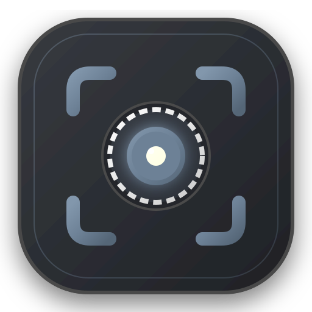

FullShot
PRO
Ekran Görüntüsü
Video Kaydı
Zamanlayıcı / Gecikme
Yok
3s
5s
10s
Tam Sayfa Yakala
Sayfayı otomatik kaydırarak tek parça yakalar
Alt+Shift+F
Görünür Alanı Yakala
O an ekranda görünen alanı anında kaydeder
Alt+Shift+V
Öğe / Bölüm Yakala
Fareyle üzerine geldiğiniz tablo, buton veya kartı seçer
Alt+Shift+E
Seçili Alanı Yakala
Fare ile seçtiğiniz dikdörtgen bölgeyi kaydeder
Alt+Shift+S
Kayıt Kapsamı
Mevcut Sekme
Aktif web sekmesi
Tüm Ekran
Masaüstü / Pencere
Ses Kaynakları
Sistem / Sekme Sesi
Sayfadaki sesleri ve medyayı dahil et
Mikrofon Sesi
Harici mikrofon ve sesli anlatım
Çözünürlük
1080p
720p
Kare Hızı
60 fps
30 fps
Kaydı Başlat
CANLI KAYIT
Sekme
•
1080p 60fps
00:00:00
Sistem Sesi
Mikrofon Kapalı
Duraklat
Bitir & Kaydet
İptal
Gelişmiş Seçenekler
Varsayılan Yakalama Davranışı
Hızlı Eylem Çubuğu Göster (Önerilen)
Otomatik Panoya Kopyala ve Çık
Doğrudan Düzenleme Stüdyosunda Aç
Format & Kalite
PNG (Kayıpsız / Net)
JPEG (Küçük Dosya Boyutu)
Kaydırma Hızı
Hızlı (150 ms)
Dengeli (250 ms - Önerilen)
Tembel Yüklemeler İçin Yavaş (500 ms)
Sabit Başlıkları (Navbar) Tekrarlatma
Klavye Kısayolları
✕
📸 Ekran Görüntüsü Kısayolları
Tam Sayfa
Alt+Shift+F
Görünür Alan
Alt+Shift+V
Öğe / Bölüm
Alt+Shift+E
Seçili Alan
Alt+Shift+S
🎥 Video & Menü Kısayolları
Duraklat / Devam
Boşluk
Sekme Değiştir
1
/
2
Kısayol Kılavuzu
?
Kapat / İptal
ESC